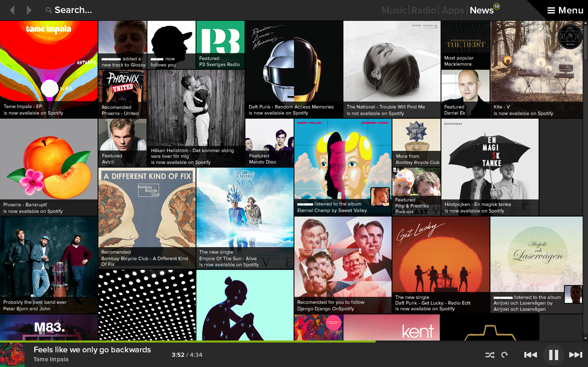

Building Uniaden Connect
During my third year at my M.Sc program in interaction design I got recruited to be the Head of IT at Uniaden. Uniaden is the biggest job fair for students in northern Sweden, it's hosted every year, put together by awesome volunteering students and attracts about 100 companies. My job was to look over everything regarding IT, this also got me the opportunity to develop something new for Uniaden. So I recruited an awesome team and decided to make an app.
This was just a fun challenge we decided to test out and we just wanted to challenge ourself. But through connections some designers at Spotify really like the idea and decided to act as a jury for our competition and also sponsored us with some prices.

Before
The old design (0.9.X) was too similar to iTunes; huge lists with a focus on fitting as much content into the window as possible. Most often I, the user, find what I’m looking for (if I’ve e.g. searched for a song) in the 10 results. I am also normally a big fan of dark UI’s, but I believe this one is too dark, and frankly, quite boring.

 My biggest change to the whole application is the idea of a new menu system. I thought there was to much going on in the "Playlist" menu list. My concern with this was when new features and functions was introduced these will sort of "push down" the playlists and hide them. So one of the features of my redesign was a new "mode switch" allowing for different modes of the application allowing features to use the whole area between the header and the footer with the music controls. The idea of this mode switch is simple. Every mode gets to use the whole screen real estate and would allow for more immersive experiences in the Spotify apps. I also borrowed a lot of the colors in the newly released iPhone app and moved the now playing info to the footer bar.
My biggest change to the whole application is the idea of a new menu system. I thought there was to much going on in the "Playlist" menu list. My concern with this was when new features and functions was introduced these will sort of "push down" the playlists and hide them. So one of the features of my redesign was a new "mode switch" allowing for different modes of the application allowing features to use the whole area between the header and the footer with the music controls. The idea of this mode switch is simple. Every mode gets to use the whole screen real estate and would allow for more immersive experiences in the Spotify apps. I also borrowed a lot of the colors in the newly released iPhone app and moved the now playing info to the footer bar.
 The second big change to in the design is more focus on the social functionality. Currently (May 2013) there is THREE different places to get notified about the social aspects of the Spotify service. So what I did was to create the mode "News" where all your notifications about new music, hottest playlists right now and friends liking something end up. This will create a space for exploring new music in the Spotify application.
This was the first of hopefully many Photoshop battles me and some other my friends at the M.Sc in interaction design program in Umeå. I learned a lot, and are looking forward to more challenges like this.
And last but not least, big thank's to Eric at Spotify and his team who actually took the time to look at our mockups. And don't hesitate to contact me if you have further questions about this.